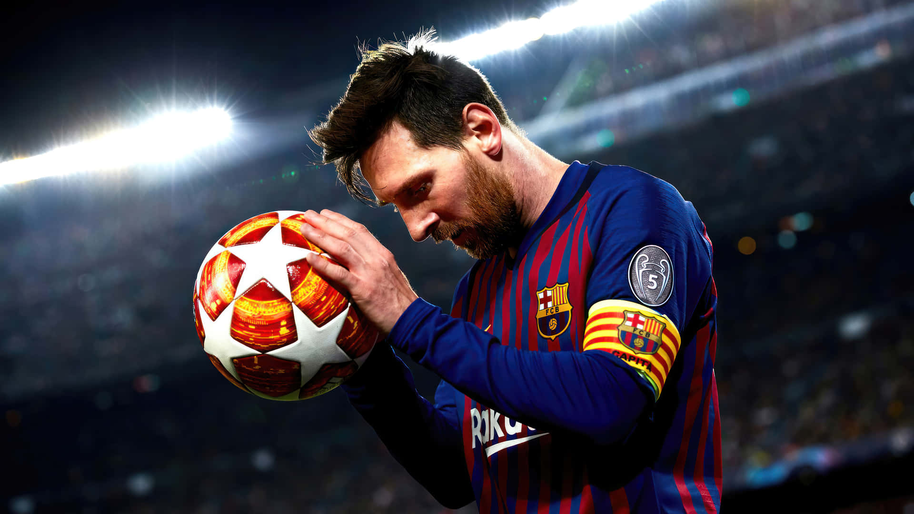
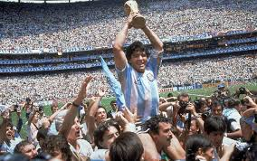
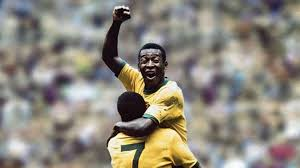
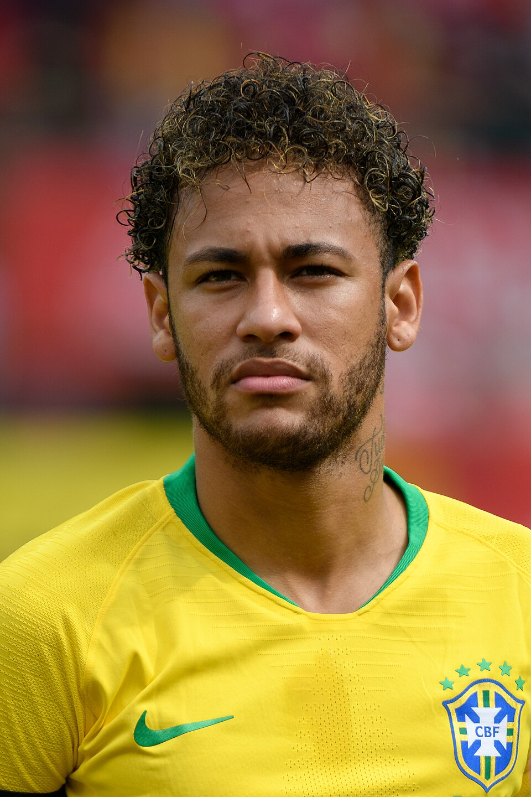

Cristiano Ronaldo
Cristiano Ronaldo, mundialmente conhecido como CR7, é um futebolista português amplamente considerado um dos maiores jogadores de todos os tempos
Cristiano Ronaldo, mundialmente conhecido como CR7, é um futebolista português amplamente considerado um dos maiores jogadores de todos os tempos

Lionel Messi é um aclamado futebolista argentino, amplamente considerado um dos maiores jogadores da história do esporte.

Diego Armando Maradona foi um lendário futebolista e treinador argentino, amplamente considerado um dos maiores jogadores da história do esporte.

Edson Arantes do Nascimento, conhecido mundialmente como Pelé, foi o maior jogador de futebol de todos os tempos e é reverenciado como o "Rei do Futebol".

Neymar da Silva Santos Júnior é um futebolista brasileiro que atua como meia-atacante e atacante, atualmente jogando pelo Santos FC e pela Seleção Brasileira.